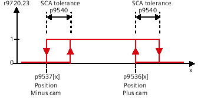

The "Safe Cam" function outputs a safe signal if the drive is within a specified position range. It facilitates the realization of safe range detection for each individual axis.
You define the cam positions to be monitored using parameters p9536[x] and p9537[x] (where x = 0 ... 29).
Observe the following rules:
The defined cams must have a certain minimum length: p9536[x] - p9537[x] >= p9540 + p9542.
The minus position value (p9537[x]) must be less than the plus position value (p9536[x]).
The cam positions must maintain a minimum distance away from the modulo position:
The minus position value of a cam must be greater than the "lower modulo limit + cam tolerance (p9540) + position tolerance (p9542)".
The plus position value of a cam must be less than the upper modulo limit + cam tolerance (p9540) + position tolerance (p9542).
For a parameterized modulo position (p9505 > 0), the lower modulo limit = 0, the upper modulo limit = p9505.
As a consequence, it is not possible to define a cam outside the modulo range.
If these rules are violated, then the drive outputs message F01686 ("SI Motion: Cam position parameterization not permissible") is output.
Owing to variations in the cycle and signal propagation times, the output cam signals of the two monitoring channels do not switch simultaneously and not precisely at the same position. For this reason, enter a tolerance band for all output cam types via parameter p9540. Within this tolerance band, the monitoring channels can have different signal states for the same output cam:
Parameterize output cam and tolerance
| Note |
The smallest possible tolerance band should be selected for the SCA function (<5 ... 10 mm). It makes sense to parameterize the output cam tolerance to be greater than or equal to the actual value tolerance. |
Reference the axis using the "Safe referencing" function.
The commissioning mode must be activated so that the parameters of this safety function can be changed. The SCA safety function is only available for the selected drive if, in options, an extended function with encoder was previously set and parameterized.
You can make the following settings for the drive in this window:
Function (SCA)
Modulo value SP
SI Motion SP modulo value (Control Unit) (p9505)
Enable SCA
SI Motion enable safety functions (Control Unit): Enable safe cams (p9501.28)
Hysteresis
SI Motion SCA (SN) tolerance (Control Unit) (p9540)
Actual position
SI Motion diagnostics safe position: Load side actual value on the Control Unit (p9708[0])
Cam
Enable
SI Motion SCA (SN) enable (Control Unit) (p9503.Bit 0..29)
SCA1 to SCA30
Cam identifier
Identifier of cams
1 to 30
Position minus [mm] (p9537[0..29])
SI Motion SCA (SN) minus cam position (Control Unit) (p9537[0..29])
SCA1 to SCA30
Position plus [mm]
SI Motion SCA (SN) plus cam position (Control Unit) (p9536[0..29])
SCA1 to SCA30
The following LEDs can display the status (blue = condition satisfied; gray = condition not satisfied):
Function (SCA)
SCA selected
SI Motion drive-integrated control signals: Deselection SCA (r9720.23)
SCA active
SI Motion SCA status signal (Control Unit): Function "Safe Cam" active (r9703.30)
SCA valid
SI Motion SCA status signal (Control Unit): Function "Safe Cam" valid (r9703.31)
Cam
Position at cam
SI Motion SCA status signal (Control Unit): Position at safe cams, 1 to 30 (r9703.bit 0..29)
When required, each setting in this dialog screen form can also be made via a parameter list. You can access the parameter list using the ">>" softkey followed by the "Parameter list" softkey.
You can define names and tooltips using the "Cam identifier" for axes/drives.
See also:
Calling function dialogs